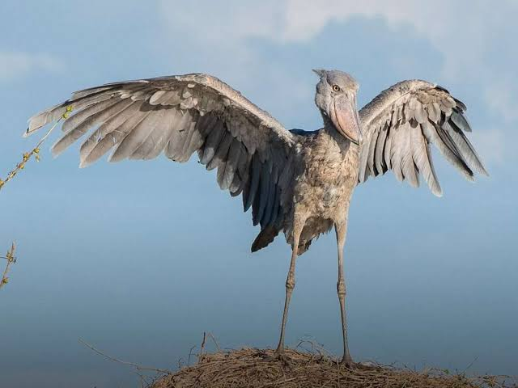
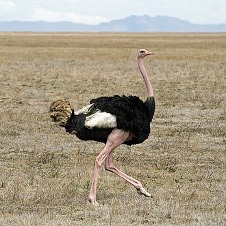
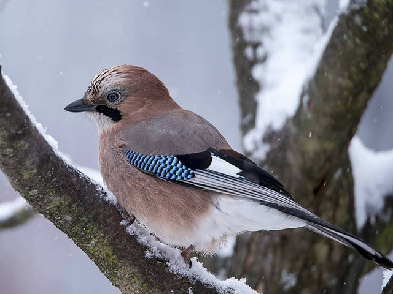
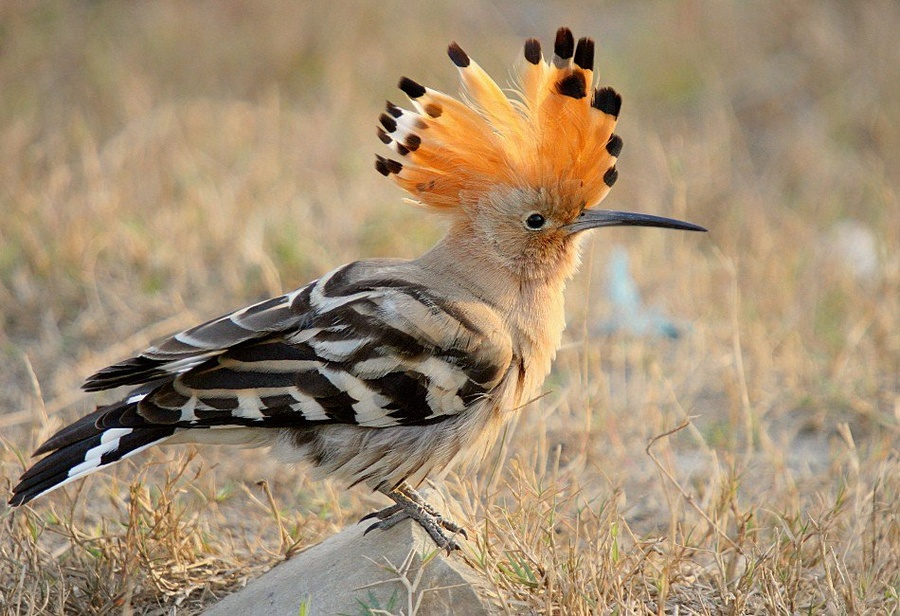

Птахи
Щоб побачити інформацію натисніть на кнопку


Казуар
Казуари ( лат. Casuarius ) - рід великих нелітаючих птахів сімейства казуарових загону казуароподібних , що мешкають у тропічних лісах Нової Гвінеї і північного сходу Австралії . "рогата голова".
Китоглав
Кітоголов [ або королівська чапля ( лат. Balaeniceps rex ) - вид птахів з загону пеліканоподібних , єдиний представник сімейства китоголових (Balaenicipitidae) . Дуже великий птах, його висота в середньому становить 1,2 м, розмах крил - 2,3 м, а вага - від 4 до 7 кг . Мешкає на тропічних болотах Східної Африки . На відміну від більшості інших птахів, очі китоглави розташовані на передній частині черепа, а не з боків, що дозволяє йому мати бінокулярний зір . Зважаючи на масивність дзьоба, птах кладе його на груди під час відпочинку або полювання.
Кукабара

Кукабара — рід наземних птахів підродини альціонних, родини рибалочкових, ендемік Австралазії — Австралії та Нової Гвінеї. Кукабари виростають у довжину від 28 до 42 см і важать приблизно 300 грамів. Назва є запозиченим словом з мови Wiradjuri guuguubarra, ономатопеї його крику. Гучний помітний крик сміху кукабари широко використовується як звуковий ефект у ситуаціях, що стосуються австралійського буша або тропічних джунглів, особливо у старих фільмах.

Страус
Стра́ус африка́нський (застаріла назва — струсь) (Struthio camelus) — вид нелітаючих птахів, що зустрічається у певних районах Африки. Це один з двох видів сучасних страусів, єдиних вижилих представників роду страуси в надряді безкілеві. Інший — сомалійський страус (Struthio molybdophanes), який був визнаний окремим видом BirdLife International з 2014 року, а раніше вважався підвидом страуса африканського[1].


Андський скельний півник
Вид поширений в Андах від венесуело-колумбійського кордону на південь до північно-західної Болівії. Мешкає у високих і вологих хмарних лісах Амазонки, розташованих на східному схилі гірського масиву Анд на висоті від 500 до 2400 метрів над рівнем моря.
Какапо
Є єдиним папугою, який не вміє літати (у нього є крила, але мускулатура, що приводить їх в рух, практично атрофувалися в результаті еволюційного процесу на ізольованих островах). Вчені пов'язують нездатність до польоту, як адаптацію до практично повної відсутності хижаків у природному середовищі існування. Також ці нелітаючі птахи, можливо, можуть бути зараховані до птахів із найбільшою тривалістю життя, оскільки їх середня тривалість життя становить 95 років.
Пелікан
Найбільші птахи у своєму загоні: довжина тіла 130-180 см, маса 7-14 кг. Зовнішність дуже характерна: незграбне, масивне тулуб, великі крила, короткі і товсті ноги з широкою перетинкою між пальцями, короткий заокруглений хвіст. Шия довга. Дзьоб теж довгий, до 47 см, з гачком на кінці. На нижній стороні дзьоба - сильно розтяжний шкіряний мішок, що використовується для лову риби.
Оперення у пеліканів пухке, нещільно прилягає до тіла. Пір'я швидко намокає, і птахи часто «віджимають» їх дзьобом. Забарвлення світле - біле, сірувате, часто з рожевим відливом. Махові пір'я зазвичай темні. Дзьоб та голі ділянки «обличчя» пофарбовані яскраво, особливо у шлюбний період. Пір'я на потилиці нерідко утворюють хохол. Самки менші і тьмяніші за самців; молоді пелікани пофарбовані в брудно-бурий або сірий колір [ 3 ] . Голос під час гніздування — глухий рев, решта часу пелікани мовчазні.
Амадин

Забарвлення самця — верх голови, шия, передня частина спини попелясто-сірого кольору, верхнє пір'я, що криє, хвоста чорного забарвлення з білими вершинами, які створюють смугастий малюнок. Від очей донизу йдуть чорні смуги, боки голови світло-каштанового забарвлення. Передня частина шиї та груди з поперечно-смугастим малюнком. Чорні та світлі смуги на грудях утворює «зеброве» забарвлення, від якого і походить назва птаха. Смугастий малюнок поступово переходить у чорну пляму, що відокремлює груди від білого черевця. Бока тіла каштанові з безліччю білих плям. Спина та крила сіро-бурого кольору. Хвіст темно-бурий. Дзьоб коралово-червоний. Ноги світло-жовтогарячі.
Сойка
Слово сойка - зменшувальна форма від давньоруської назви цього птаха "соя". Передбачається, що назва споріднена дієслову «сяяти» і дано птиці за яскраве оперення [ 3 ] Сойка розміром із галку . Має яскраве пухке оперення, помітний широкий хохол на голові і досить довгий хвіст. Колір тулуба рудувато-коричневий, крила , хвіст , у деяких підвидів і верх голови - чорний, надхвість біле, пір'я на плечах - яскраво-блакитні з вузькими чорними смужками. Голова у соїк Сибіру руда, у європейських птахів — білувата з поздовжніми бурими барвистими. Від кукші можна відрізнити за білим надхвістю і чорним хвостом. Дорослі особини мають довжину з хвостом 32-37 см, розмах крил 50-58 см; маса - 129-197 грам (номінативний підвид), 130-175 г (підвид G. g. pekingensis , що живе на північному сході Китаю) [ 4 ] . Тривалість: 13 секунд.0:13 Крики сойки Крик - різке "дчее-дчее" і деренча "пірр". Пісня — набір різких звуків та наслідування інших видів птахів. Крім того, сойка легко навчається наслідувати будь-які звуки, від людського голосу до стуку сокири.
Імператорський пінгвін

Імператорський пінгвін найвищий та найбільший серед своїх сородичів: їхній зріст може сягати до 1,30 м, а вага до 50 кг, ці показники стосуються найбільших зі самців пінгвінів. Його тіло обтічної форми. Невеликий розмір голови і ніг запобігає найменшій втраті тепла в холодних умовах Антарктиди. Оперення на спині чорне, а на грудях біле, що робить його у воді менш помітним для ворогів. Під шиєю і на щоках — жовто-оранжеве забарвлення. Імператорські пінгвіни можуть місяцями жити в океані і припливати до берега лише, щоби відпочити[2].
Удод
Удо́д [ 1 ] ( лат. Upupa epops ) — невеликий яскраво забарвлений птах з довгим вузьким дзьобом і чубком, що іноді розкривається у вигляді віяла. Широко поширений у південних та центральних областях Європи та Азії , а також майже на всій території Африки . Улюбленим місцем проживання є відкрита місцевість з рідким чагарником або деревами, така як савана , луг або пасовища. Також зустрічається на культивованих ландшафтах у фруктових садах та виноградниках. Обережний, але не полохливий - як правило, цурається людини і летить при її наближенні [ 2 ] . Багато часу проводить на землі, полюючи на комах . Представник сімейства удодових (Upupidae) із загону Птахів-носорогов (Bucerotiformes) [ 3 ] . Думки орнітологів про систематичне становище цього виду дуже різноманітні. Деякі вчені розглядають підвиди звичайного удода як окремі види, а також виділяли удодів в окремий загін удадоподібних (Upupiformes) [ 4 ] . За даними Міжнародного союзу охорони природи досить численний вид. Незважаючи на те, що загальна популяція птахів за останні роки знизилася, її динаміка нині не дозволяє розглядати цей вид як уразливий. У Міжнародній Червоній книзі удод має статус таксона мінімального ризику (категорія LC) [ 5 ] .